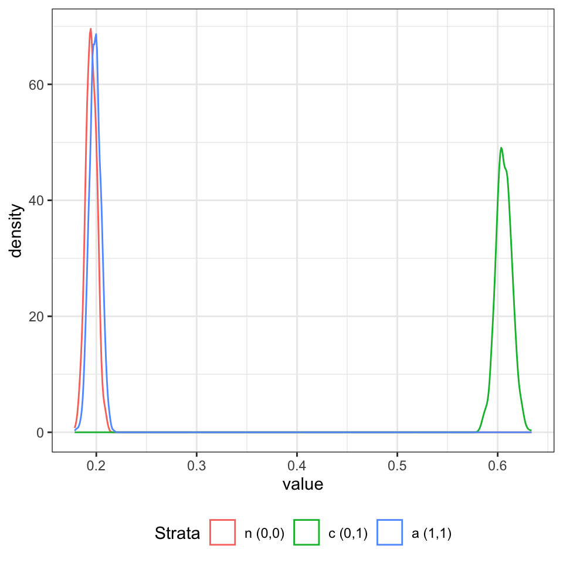

| Assigned (Z) |
Received (D)
|
|
|---|---|---|
| Control (D = 0) | Treatment (D = 1) | |
| Control (Z = 0) | never-takers and compliers | always-takers and defiers |
| Treatment (Z = 1) | never-takers and defiers | always-takers and compliers |
Principal Stratification
causal-inference
bayesian
We routinely consider pre-treatment adjustment, however, post-treatment confounding is not so often considered. Post-treatment confounding arises as a result of intermediate variables \(D\) that lie on the pathway between the treatment \(Z\) and the outcome \(Y\).
Adjusting analyses for these post-treatment variables in the same manner as one would do for baseline covariates can lead to biased effect estimates. Non-compliance is one example of an intermediate variable where this can occur.
Typically, \(Z\) (assignment) strongly influence \(D\) but \(D \ne Z\) for some (or many) units. Given that units with \(Z=1, D = d\) are sometimes not the same as units with \(Z=0, D = d\) direct comparisons can be problematic. For example, the units that do not comply when assigned to treatment may not be the same as units that do not comply when assigned to control. This could arise if, say, the units that do not comply when assigned to treatment are sicker than average and cannot accommodate the side effects on the treatment arm, which do not occur so readily on the control arm.
The ideas for principal stratification were popularised in the paper by Frangakis and Rubin [1]. They generalised the instrument variable approach. Other references include [2], [3], [4], [5].
The key concept is that principal strata can be conceptualised and these are not affected by treatment assignment. That is, the units can be group in terms of joint potential outcomes for \(D\) and membership in any stratum only reflects a subjects characteristics, which are defined pre-treatment. Within stratum comparisons are thus well defined causal effects.
These strata are defined differently dependent on the setting - take noncompliance as an example. Define \(D_i(z)\) as the unit level potential outcome for the intermediate variable given assignment to treatment arm \(z\) for \(z=0,1\). \(D_i(z) = 0\) if subject \(i\) received control given assignment to \(z\) \(D_i(z) = 1\) if subject \(i\) received treatment given assignment to \(z\)
- never takers = \(\{i: D_i(0) = 0, D_i(1) = 0 \}\)
- defiers = \(\{i: D_i(0) = 1, D_i(1) = 0 \}\)
- compliers = \(\{i: D_i(0) = 0, D_i(1) = 1 \}\)
- always takers = \(\{i: D_i(0) = 1, D_i(1) = 1 \}\)
the complier average causal effect is then
\[ \tau^{\text{CACE}} = \mathbb{E}[ Y_i(1) - Y_i(0) | D_i(0) = 0, D_i(1) = 1 ] \]
While this is one set of PS that might be associated with the case of non-compliance, the definitions differ dependent on the situation. Centrally, a PS has the goal of characterising treatment effect heterogeneity across different subpopulations.
The issue with PS is that what we observe constitute latent mixtures of units rather than specific strata as shown in Table 1. From the above example, of those people who we assign and observe to take the control assignment, we do not know which units are those that would take control regardless of what their assignment was versus which units are the compliers. That is, the specific strata are not observed and therefore additional assumptions are required to estimate principal causal effects.
The assumption we absolutely need are unconfounded assignment. That is, the potential outcomes for \(Y\) and \(D\) are independent of treatment assignment conditional on covariates. This implies that membership in a strata has the same distribution between treatment arms. Without this, there is no way to move forward.
Additional assumptions that sharpen identification are monotonicity and exclusion restriction.
Monotonicity rules out certain components of a mixture that contributes to a given strata. For example, we rule out the possibility of defiers.
Exclusion restriction rules out any direct effect from treatment not mediated through the actual treatment among never-takers and always-takers.
While we can estimate the CACE in the simplest case from the identiability assumptions, we can attempt to resolve the strata in a more comprehensive way by adopting a latent mixture model approach, as explicated by Liu and Li [6].
For each unit there exists \((Y_i(1), Y_i(0), D_i(1), D_i(0), \mathbf{X_i}, Z_i)\) but we only observe \(Y\) based on the assigned treatment and \(D\) under that treatment. Therefore, strata membership, \(S_i = (D_i(0), D_i(1))\), is unobserved.
To proceed, we need a model for the strata membership \(S\) and the outcome \(Y\). For example, the \(S\) model can take the form of a multinomial model of some form and the outcome might be a GLM. The full likelihood decomposes into an S-model (a principal strata model given the covariates) and a Y-model (an outcome model given the stratum, covariates and treatment). This yields:
\[ \begin{aligned} l(\theta) \propto \prod_{i=1}^n \left( \sum_{s \in \mathcal{S}:D_i=D(s,Z_i)} \text{Pr}(S_i = s | X_i, \theta) \text{Pr}(Y_i | S_i = s, Z_i, X_i, \theta) \right) \end{aligned} \]
for the \(i = 1, \dots n\) units in the sample where \(\mathcal{S}\) is the set of all PS and \(D(s, z)\) denotes the actual treatment \(D_i\) induced by PS \(S_i = s\) and assigned treatment \(Z_i = z\), i.e. a product of multiple components:
\[ \begin{aligned} l(\theta) &\propto \prod_{i:Z_i=0,D_i=0} (\pi_{i,c}f_{i,c0} + \pi_{i,n}f_{i,n0}) \times \prod_{i:Z_i=0,D_i=1} (\pi_{i,a}f_{i,a0} + \pi_{i,d}f_{i,d0}) \\ \quad &\times \prod_{i:Z_i=1,D_i=0} (\pi_{i,n}f_{i,n1} + \pi_{i,d}f_{i,d1}) \times \prod_{i:Z_i=1,D_i=1} (\pi_{i,a}f_{i,a1} + \pi_{i,c}f_{i,c1}) \end{aligned} \]
where \(f_{i,sz} = \text{Pr}(Y_i | S_i = s, Z_i, \mathbf{X}_i, \theta)\) and \(\pi_{i,s} = \text{Pr}(S_i = s | \mathbf{X}_i, \theta)\) and where the \(c,n,a,d\) denote the compliers, never-takeres, always-takers and defiers (for the noncompliance case considered here).
For any given strata, we can write the PCE based on the iterated expectations:
\[ \begin{aligned} \tau_s = \mathbb{E}[ \mathbb{E}[Y_i | Z_i = 1, S_i = s, X_i] | S_i = s] - \mathbb{E}[ \mathbb{E}[Y_i | Z_i = 0, S_i = s, X_i] | S_i = s] \end{aligned} \]
If we let \(g_{z,s}(x;\theta) = \mathbb{E}[ Y_i | Z_i = z, S_i = s, X_i = x, \theta]\) and \(p_s(x;\theta) = \text{Pr}(S_i = s | X_i = x, \theta)\) from the Y-model and S-model respectively, then the PCE can be computed from the posterior as:
\[ \begin{aligned} \hat{\tau}_s (\theta) = \frac{ \sum_{i=1}^n g_{1,s}(X_i;\theta) p_s(X_i; \theta) }{\sum_i=1^n p_s(X_i; \theta)} - \frac{ \sum_{i=1}^n g_{0,s}(X_i;\theta) p_s(X_i; \theta) }{\sum_i=1^n p_s(X_i; \theta)} \end{aligned} \]
Assuming that \(\theta_k\) are samples from the posterior distribution for \(\theta\) then these can be plugged into the above to approximate the distribution of \(\tau_s\).
Implementation
An implementation of the combined S-model and Y-model is shown below for the case of a binary outcome and a binary treatment with a binary intermediate variable. The model assumes neither monotonicity hence and exclusion restriction.
data {
int<lower=0> N; // number of observations
int<lower=0> PS; // number of predictors for principal stratum model
int<lower=0> PG; // number of predictors for outcome model
int<lower=0, upper=1> Z[N]; // treatment arm
int<lower=0, upper=1> D[N]; // post randomization confounding variable
int<lower=0, upper=1> Y[N]; // binary outcome
matrix[N, PS] XS; // model matrix for principal stratum model
matrix[N, PG] XG; // model matrix for outcome model
}
transformed data {
int S[8];
S[1] = 1;
S[2] = 1;
S[3] = 2;
S[4] = 2;
S[5] = 3;
S[6] = 3;
S[7] = 4;
S[8] = 4;
}
parameters {
matrix[3, PS] beta_S; // coefficients for principal stratum model
matrix[8, PG] beta_G; // coefficients for outcome model
}
transformed parameters {
}
model {
// random effect
// prior
if (PS >= 2)
to_vector(beta_S[:, 2:PS]) ~ normal(0, 1);
if (PG >= 2)
to_vector(beta_G[:, 2:PG]) ~ normal(0, 1);
// model
for (n in 1:N) {
int length;
real log_prob[4];
log_prob[1] = 0;
for (s in 2:4) {
log_prob[s] = XS[n] * beta_S[s-1]';
}
if (Z[n] == 0 && D[n] == 0)
length = 2;
else if (Z[n] == 1 && D[n] == 0)
length = 2;
else if (Z[n] == 1 && D[n] == 1)
length = 2;
else if (Z[n] == 0 && D[n] == 1)
length = 2;
{
real log_l[length];
if (Z[n] == 0 && D[n] == 0) {
// Z:0 D:0 S:0/1
log_l[1] = log_prob[1] + bernoulli_lpmf(Y[n] | inv_logit(XG[n] * beta_G[1]'));
log_l[2] = log_prob[2] + bernoulli_lpmf(Y[n] | inv_logit(XG[n] * beta_G[3]'));
}
else if (Z[n] == 1 && D[n] == 0) {
// Z:1 D:0 S:0/2
log_l[1] = log_prob[1] + bernoulli_lpmf(Y[n] | inv_logit(XG[n] * beta_G[2]'));
log_l[2] = log_prob[3] + bernoulli_lpmf(Y[n] | inv_logit(XG[n] * beta_G[6]'));
}
else if (Z[n] == 1 && D[n] == 1) {
// Z:1 D:1 S:1/3
log_l[1] = log_prob[2] + bernoulli_lpmf(Y[n] | inv_logit(XG[n] * beta_G[4]'));
log_l[2] = log_prob[4] + bernoulli_lpmf(Y[n] | inv_logit(XG[n] * beta_G[8]'));
}
else if (Z[n] == 0 && D[n] == 1) {
// Z:0 D:1 S:2/3
log_l[1] = log_prob[3] + bernoulli_lpmf(Y[n] | inv_logit(XG[n] * beta_G[5]'));
log_l[2] = log_prob[4] + bernoulli_lpmf(Y[n] | inv_logit(XG[n] * beta_G[7]'));
}
target += log_sum_exp(log_l) - log_sum_exp(log_prob);
}
}
}
generated quantities {
vector[4] strata_prob; // the probability of being in each stratum
vector[8] mean_effect; // mean response
{
matrix[N, 4] log_prob;
vector[8] numer;
matrix[N, 8] expected_mean;
for (i in 1:N)
for (j in 1:8)
expected_mean[i, j] = inv_logit(XG[i] * beta_G[j]');
log_prob[:, 1] = rep_vector(0, N);
log_prob[:, 2:4] = XS * beta_S';
for (n in 1:N) {
log_prob[n] -= log_sum_exp(log_prob[n]);
}
for (s in 1:4) strata_prob[s] = mean(exp(log_prob[:, s]));
for (g in 1:8) {
numer[g] = mean(expected_mean[:, g] .* exp(log_prob[:, S[g]]));
mean_effect[g] = numer[g] / strata_prob[S[g]];
}
}
}In the simplest case, where we have no \(X\) design matrix, i.e. just intercepts, the observed likelihood is
\[ \begin{aligned} L = p(Z, D, Y) = p(Z) \sum_s p(S = s) p(D | Z, S = s) p(Y | D, Z, S = s) \end{aligned} \]
However, the \(p(D | Z, S = s)\) part is either 0 or 1, depending on whether \((D, Z, S)\) are consistent with each other or not. This results in a simplification to:
\[ \begin{aligned} L \propto \sum_{s \text{ consistent with } Z \text{ and } D} p(S=s)p(Y | Z, S = s) \end{aligned} \]
which is what is happening in the conditional elements of the model block.
Specifically, the linear predictors for the multinomial S-model are implemented as the XS[n] * beta_S[s-1]' code. With a single column in the XS design matrix, an implicit uniform prior is being placed on the intercept term, being defined as the log-probability (actually it is the log-odds). Note that the reference category is set to zero for identifiability.
For each unit, the combination of the treatment assignment and the occurrence of the intermediate event dictate whether there are one or two contributions to the log-likelihood corresponding to the two cohorts that make up the units within each strata for this example. Without the monotonicity and exclusion restriction assumptions, all combinations result in contributions.
For example, when control is the assignment and the received intervention is the control, there are contributions from both the never-takes (log_prob[1]) and the compliers (log_prob[2]). Similarly, when treatment is the assignment and the received intervention is the control, there are contributions from the never-takers (again the log_prob[1]) and the defiers (log_prob[3]) and so on.
The two assumptions (monotonicity/ER) can be introduced to the model as follows:
data {
int<lower=0> N; // number of observations
int<lower=0> PS; // number of predictors for principal stratum model
int<lower=0> PG; // number of predictors for outcome model
array[N] int<lower=0, upper=1> Z; // treatment arm
array[N] int<lower=0, upper=1> D; // post randomization confounding variable
array[N] int<lower=0, upper=1> Y; // binary outcome
matrix[N, PS] XS; // model matrix for principal stratum model
matrix[N, PG] XG; // model matrix for outcome model
}
transformed data {
array[4] int S;
S[1] = 1;
S[2] = 2;
S[3] = 2;
S[4] = 3;
}
parameters {
matrix[2, PS] beta_S; // coefficients for principal stratum model
matrix[4, PG] beta_G; // coefficients for outcome model
}
transformed parameters {
}
model {
// random effect
// prior
// use informative prior for intercepts
beta_S[:, 1] ~ normal(0, 2);
beta_G[:, 1] ~ normal(0, 2);
if (PS >= 2)
to_vector(beta_S[:, 2:PS]) ~ normal(0, 1);
if (PG >= 2)
to_vector(beta_G[:, 2:PG]) ~ normal(0, 1);
// model
for (n in 1:N) {
int length;
array[3] real log_prob;
log_prob[1] = 0;
for (s in 2:3) {
log_prob[s] = XS[n] * beta_S[s-1]';
}
if (Z[n] == 0 && D[n] == 0)
length = 2;
else if (Z[n] == 1 && D[n] == 0)
length = 1;
else if (Z[n] == 1 && D[n] == 1)
length = 2;
else if (Z[n] == 0 && D[n] == 1)
length = 1;
{
array[length] real log_l;
if (Z[n] == 0 && D[n] == 0) {
// Z:0 D:0 S:0/1 never takers or compliers
log_l[1] = log_prob[1] + bernoulli_lpmf(Y[n] | inv_logit(XG[n] * beta_G[1]'));
log_l[2] = log_prob[2] + bernoulli_lpmf(Y[n] | inv_logit(XG[n] * beta_G[2]'));
}
else if (Z[n] == 1 && D[n] == 0) {
// Z:1 D:0 S:0 never takers (defiers don't exist)
log_l[1] = log_prob[1] + bernoulli_lpmf(Y[n] | inv_logit(XG[n] * beta_G[1]'));
}
else if (Z[n] == 1 && D[n] == 1) {
// Z:1 D:1 S:1/2 compliers or always takers
log_l[1] = log_prob[2] + bernoulli_lpmf(Y[n] | inv_logit(XG[n] * beta_G[3]'));
log_l[2] = log_prob[3] + bernoulli_lpmf(Y[n] | inv_logit(XG[n] * beta_G[4]'));
}
else if (Z[n] == 0 && D[n] == 1) {
// Z:0 D:1 S:2 always takers
log_l[1] = log_prob[3] + bernoulli_lpmf(Y[n] | inv_logit(XG[n] * beta_G[4]'));
}
target += log_sum_exp(log_l) - log_sum_exp(log_prob);
}
}
}
generated quantities {
vector[3] strata_prob; // the probability of being in each stratum
vector[4] mean_effect; // mean response
{
matrix[N, 3] log_prob;
vector[4] numer;
matrix[N, 4] expected_mean;
for (i in 1:N)
for (j in 1:4)
expected_mean[i, j] = inv_logit(XG[i] * beta_G[j]');
log_prob[:, 1] = rep_vector(0, N);
log_prob[:, 2:3] = XS * beta_S';
for (n in 1:N) {
log_prob[n] -= log_sum_exp(log_prob[n]);
}
for (s in 1:3) strata_prob[s] = mean(exp(log_prob[:, s]));
for (g in 1:4) {
numer[g] = mean(expected_mean[:, g] .* exp(log_prob[:, S[g]]));
mean_effect[g] = numer[g] / strata_prob[S[g]];
}
}
}where for certain combinations of \(Z\) and \(D\) only one group is assumed to contribute. Specifically, for the monotonicity assumption the set of possible strata is restricted. Units are assumed to never be defiers and therefore for the cases where \((Z=1,D=0)\) and \((Z=0,D=1)\) the contribution to the Y-model is one-dimensional.
Additionally, an informative prior was placed on the intercepts in the above model.
For the exclusion restriction assumption, the number of non-zero effects is truncated, reducing the number of free parameters. This happens because we are assuming that the strata of units that never take the treatment are unable to show a treatment effect and similarly so for those that always take treatment.
Finally, the model section increments the target via the log_sum_exp calculations for the contributions of all units. These effectively map to
\[ L \propto \sum_{s \text{ consistent with } Z \text{ and } D} \frac{\exp(\beta_s)p(Y | Z, S = s)}{\sum_{s \text{ consistent with } Z \text{ and } D} \exp(\beta_s)} \]
The generated quantities block (version 1 of the stan model) is used to (1) compute the expected values of the outcome for each unit for all strata, which can be used to derive the principal causal effects. In version 2 of the model, this process is simplified as there are less strata and comparisons to consider.
Application
This draws heavily on the notes from Fan Li’s (Duke Uni) lecture notes and labs on causal inference.
Mimic a two-arm trial \(z = 0, 1\) with two-sided non-compliance and all cause mortality as the primary outcome. Define strata where \(D_i(z)\) indicates the treatment received under assignment to \(z\):
- never takers \((0,0) = \{i: D_i(0) = 0, D_i(1) = 0\}\)
- compliant \((0,1) = \{i: D_i(0) = 0, D_i(1) = 1\}\)
- always takers \((1,1) = \{i: D_i(0) = 1, D_i(1) = 1\}\)
i.e. assume monotonicity - that defiers do not exist. Simulate strata membership using independent samples drawn with probability 0.2, 0.6, 0.2. Define baseline covariates for disease severity \(X_1 \sim \mathcal{N}(0, 1)\) and age above 60 \(X_2 \sim \text{Bernoulli}(0.6)\).
\[ \begin{aligned} (Y | S = (0,0), Z = z, X_1, X_2) &\sim \text{Bernoulli}(g^{-1}(\eta_{s[1]})) \\ (Y | S = (0,1), Z = z, X_1, X_2) &\sim \text{Bernoulli}(g^{-1}(\eta_{s[2]})) \\ (Y | S = (1,1), Z = z, X_1, X_2) &\sim \text{Bernoulli}(g^{-1}(\eta_{s[3]})) \\ \\ \eta_{s[1]} &= 0.1 + 1.1 X_1 + 0.4 X_2 \\ \eta_{s[2]} &= 0 - 2 z + 1.1 X_1 + 0.4 X_2 \\ \eta_{s[3]} &= -0.3 + 1.1 X_1 + 0.4 X_2 \\ \end{aligned} \]
set.seed(973589239)
N <- 1e4
s <- sample(1:3, N, replace = TRUE, prob = c(0.2, 0.6, 0.2))
z <- sample(c(0, 1), N, replace = TRUE, prob = c(0.5, 0.5))
x1 <- rnorm(N)
x2 <- rbinom(N, 1, 0.6)
d_1 <- data.table(s = s, z = z, x1 = x1, x2 = x2)
d_1[s == 1, d := 0]
d_1[s == 2, d := z]
d_1[s == 3, d := 1]
d_1[s == 1, eta := 0.1 + 1.1*x1 + 0.4*x2]
d_1[s == 2, eta := 0 -2*z + 1.1*x1 + 0.4*x2]
d_1[s == 3, eta := -0.3 + 1.1*x1 + 0.4*x2]
d_1[, y := rbinom(N, 1, plogis(eta))]# expected linear predictor for control 0 + -2*0 + 1.1*0 + 0.4*0.6 = 0.24
# expected linear predictor for control 0 + -2*1 + 1.1*0 + 0.4*0.6 = -1.76
d_1[s == 2 & z == 0, mean(eta)]
## [1] 0.2463996
d_1[s == 2 & z == 1, mean(eta)]
## [1] -1.772282# convert to prob scale
d_1[s == 2 & z == 0, plogis(mean(eta))]
## [1] 0.5612901
d_1[s == 2 & z == 1, plogis(mean(eta))]
## [1] 0.1452588
d_1[s == 2 & z == 1, plogis(mean(eta))] - d_1[s == 2 & z == 0, plogis(mean(eta))]
## [1] -0.4160314# average probability across strata by treatment group
d_1[s == 2 & z == 0, mean(plogis(eta))]
## [1] 0.5480463
d_1[s == 2 & z == 1, mean(plogis(eta))]
## [1] 0.1926421
d_1[s == 2 & z == 1, mean(plogis(eta))] - d_1[s == 2 & z == 0, mean(plogis(eta))]
## [1] -0.3554042# should align somewhat to the observed data
d_1[s == 2 & z == 0, mean(y)]
## [1] 0.5494505
d_1[s == 2 & z == 1, mean(y)]
## [1] 0.2080828
d_1[s == 2 & z == 1, mean(y)] - d_1[s == 2 & z == 0, mean(y)]
## [1] -0.3413677Given we simulate the data, we know which strata is which so we can use g-computation to calculate the risk difference in the observed data. On average, this should be somewhere near the expected value but will not be equal to it.
# compliers
d_s2 <- d_1[s == 2]
f0 <- glm(y ~ z + x1 + x2, data = d_s2, family = binomial())
d_s2_0 <- copy(d_s2)
d_s2_0[, z := 0]
eta_0 <- predict(f0, newdata = d_s2_0)
d_s2_1 <- copy(d_s2)
d_s2_1[, z := 1]
eta_1 <- predict(f0, newdata = d_s2_1)
rd <- plogis(mean(eta_1)) - plogis(mean(eta_0))
rd
## [1] -0.3965591
# average risk by group, not average log-odds transformed as above
# plogis(E[X]) \ne E[plogis(X)] due to nonlinearity
rd <- mean(plogis(eta_1)) - mean(plogis(eta_0))
rd
## [1] -0.3397087Compile and fit the second implementation of the principal strata model that includes both monotonicity and ER assumptions:
m1 <- cmdstanr::cmdstan_model("stan/principal-stratum-02.stan")
ld <- list(
N = nrow(d_1),
PS = 1, # intercept only model
PG = 3, # intercept plus additive x1, x2, no interaction
Z = d_1$z,
D = d_1$d,
Y = d_1$y,
XS = matrix(rep(1, nrow(d_1)), ncol = 1),
XG = cbind(1, d_1$x1, d_1$x2)
)
f1 <- m1$sample(data = ld, chains = 1, iter_sampling = 1000, refresh = 0,
adapt_delta = 0.9)Running MCMC with 1 chain...
Chain 1 finished in 134.1 seconds.We can visualise the posterior for strata membership as shown in Figure 1.
d_p1 <- data.table(f1$draws(variables = "strata_prob", format = "matrix"))
names(d_p1) <- paste0(1:ncol(d_p1))
d_fig <- melt(d_p1, measure.vars = names(d_p1), variable.name = "strata")
d_fig[strata == "1", strata := "n (0,0)"]
d_fig[strata == "2", strata := "c (0,1)"]
d_fig[strata == "3", strata := "a (1,1)"]
ggplot(d_fig, aes(x = value, group = strata, col = strata)) +
geom_density() +
scale_color_discrete("Strata") +
theme_bw() +
theme(legend.position = "bottom")

And calculate the posterior expected mean for each arm and each strata as follows:
d_p1 <- data.table(f1$draws(variables = "mean_effect", format = "matrix"))
# by definition and assumptions:
N_strata <- 3
N_trt <- 2
d_grid <- CJ(
s = 1:N_strata,
z = 0:(N_trt-1)
)
# strata definitions (0,0) never, (0,1)compliant, (1,1) always
d_grid[, d := c(
0, 0, 0, 1, 1, 1
)]
# index into effect estimate for comparison
d_grid[, g := c(
1, 1, 2, 3, 4, 4
)]
a_out <- array(NA, dim = c(N_strata, N_trt, nrow(d_p1)))
for(i in 1:N_strata){
for(j in 1:N_trt){
g_ref <- d_grid[s == i & z == (j-1), g]
a_out[i,j,] <- d_p1[, g_ref, with = F][[1]]
}
}
dimnames(a_out)[[1]] <- c("n", "c", "a")
dimnames(a_out)[[2]] <- c("0", "1")
# summary outputs (means):
apply(a_out, c(1,2), mean) 0 1
n 0.5708451 0.5708451
c 0.5483657 0.2098348
a 0.5012453 0.5012453and then summarise treatment effects via simple comparisons between the arms:
rbind(
n = quantile(a_out[1, 2,] - a_out[1, 1,], probs = c(0.5, 0.025, 0.975)),
c = quantile(a_out[2, 2,] - a_out[2, 1,], probs = c(0.5, 0.025, 0.975)),
a = quantile(a_out[3, 2,] - a_out[3, 1,], probs = c(0.5, 0.025, 0.975))
) 50% 2.5% 97.5%
n 0.000000 0.0000000 0.0000000
c -0.338292 -0.3676863 -0.3087216
a 0.000000 0.0000000 0.0000000Further testing would be beneficial to evaluate the long-run properties of this particular estimator.
References
1. Frangakis C, Rubin D. Principal stratification in causal inference. Clinical Trials. 2002;58:21–9.
2. Page L. Principal stratification: A tool for understanding variation in program effects across endogenous subgroups. American Journal of Evaluation. 2015. https://doi.org/10.1177/1098214015594419.
3. Mercatanti A. Do debit cards decrease cash demand?: Causal inference and sensitivity analysis using principal stratification. JRSS Applied Statistics Series C. 2017. https://doi.org/10.1111/rssc.12193.
4. Liu B. Principal stratification analysis of noncompliance with time-to-event outcomes. Biometric Methodology. 2024. https://doi.org/10.1093/biomtc/ujad016.
5. Hirano K. Assessing the effect of an influenza vaccine in an encouragement design. Biostatistics. 2000. https://doi.org/10.1093/biostatistics/1.1.69.
6. Liu B, Li F. PStrata: An r package for principal stratification. Journal of Statistical Software. 2023.